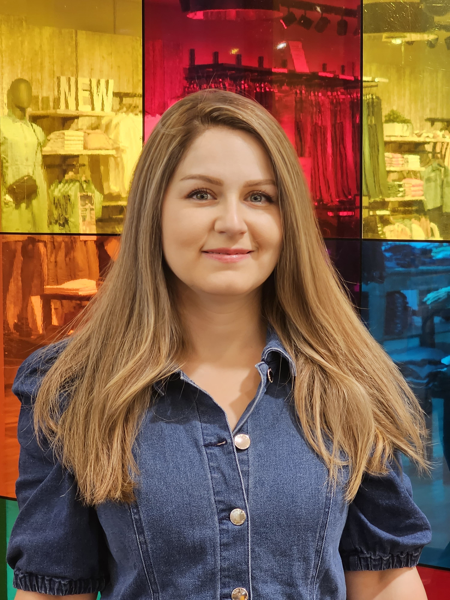

Rama Kadri
Quality Assurance, Quality Control, and Food Safety Specialist
Dedicated Food Technology Specialist with an MSc from DTU and extensive practical experience within the Danish food regulatory framework. Expert in Danish Food Legislation through roles at Fødevarestyrelsen and industrial quality control at Arla Foods. Specialized in shelf-life extension, HACCP, and ISO standards. Fluent in Danish (Dansk 3) and English, bringing a blend of academic excellence and hands-on operational expertise.
Professional Experience
Expertise & Certifications
Competency Mapping
Technical Proficiencies
- Regulatory: Smiley-scheme, EU Food Law, Grænsekontrol
- Management: HACCP, ISO 22000, ISO 9001, Internal Auditing
- Lab/R&D: Micro analysis, Shelf-life, Natural Antimicrobials
- Ops: Process optimization, CCP monitoring, FSMS
Languages
Education & Career Milestones
Academic Background
MSc in Food Technology and Processing
Technical University of Denmark (DTU)
2022 – 2026
Thesis: Extending Shelf Life and Boosting Food Safety with Natural Antimicrobials and Chia Seed Gel for Bread.
Maternity Leave (Barselsorlov)
2024 – 2025 | Planned career break
Bachelor of Engineering in Food Technology
Aleppo University
2010 – 2015
Certifications & Publications
Key Certifications
- ISO 9001/22000 Auditor
- HACCP Specialist Training
- QMSA Quality Manager
Featured Publication
"Extending Shelf Life with Natural Antimicrobials" (Focus on Bakery Innovation)
Recommendations
Official letters from Arla Foods and Qualitas International UK available upon request.
Personal Interests
"Living in Copenhagen with my family, I prioritize a healthy work-life balance and an active lifestyle. I am an avid reader, enjoying both professional literature to stay updated on food science trends and classic literature for personal growth. When not reading, I enjoy exploring the outdoors and experimenting with culinary techniques that blend my technical background with a love for cooking. I am a social person who values transparency and a positive team culture."